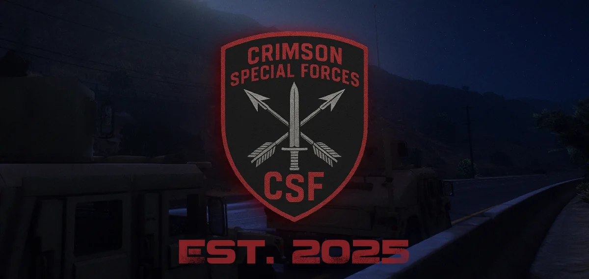
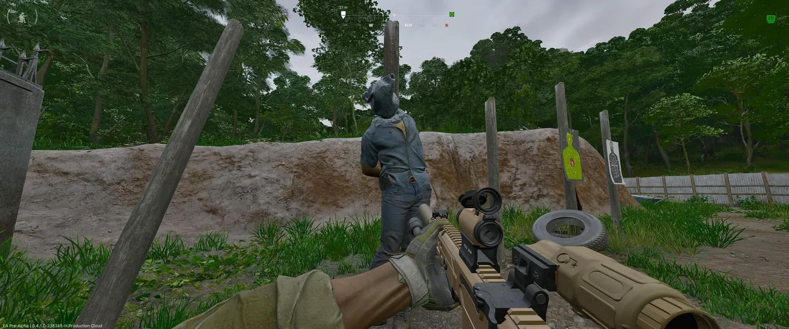

CRIMSON
NETWORK
An international multi-game network I directed — and the self-running team I built to run it.
Crimson Network (Crimson Shield International) is an international multi-game community. I came in as Overseer (general director), moved into Staff Manager, built a self-running staff team — then handed it off to focus on new projects.
The mark of a good system is that it runs without you. I built a staff team with department heads that outlived my involvement — trained, structured and handed over cleanly.
Peak ~1,400 members. Full growth & retention metrics available on request.
Established network, heavy management load.
The work centred on staff structure, progression, channel architecture, member feedback and retention — the layers that make scale manageable.
Distribute ownership.
Recruited and trained department-led staff, rebuilt channels around actual member use, added progression/trust systems and strengthened feedback and partnership loops.
Team survived the handoff.
The staff structure continued after I moved on; the network reached ~1,400 members and could operate without me in the room.
A system that needs you is not finished.
Founder-dependent. The owner manages every area and every decision; every escalation and question ends up with one person. It looks like control and works until that person is unavailable — then activity, moderation and momentum stop together.
Department names shown are illustrative of the structure. The point is where responsibility sits, not an org chart of named individuals.
Self-running staff structure
Recruited and trained a team with department heads that outlived my involvement — the whole point.
Levels & role hierarchy
A leveling system and role hierarchy that reward activity and give members somewhere to climb.
Trading Karma reputation
A member-to-member trade reputation system, plus a clan, a Steam group and a private game server.
Channel restructure
Rebuilt the network around what members actually use, not what looked complete on paper.
"You asked, we listened"
Member-feedback-driven changes — the loop that makes people feel a place is theirs.
Retention & partnership
Retention analysis, marketing, and a game-studio community partnership to pull in reach.
How you leave decides whether it survives.
Come in as Overseer
General direction of an already established international multi-game network. The load was management, not launch: structure, progression, channels, feedback and retention.
Move into Staff Manager
Shift from directing the network to building the people who run it. The job changes from making decisions to making decision-makers.
Recruit and train
Recruitment and application flows to bring the right people in, then training and operating standards so that what they do is consistent without supervision.
Give departments real ownership
Department heads own their area outright — escalation paths and accountability defined so responsibility does not quietly flow back upward.
Hand off
Move on to new projects. This is the test: a structure that only works while its architect is present has not actually been built.
It kept running
The staff structure continued after I left, and the network reached a peak of ~1,400 members. That continuity is the result the case study is about.



